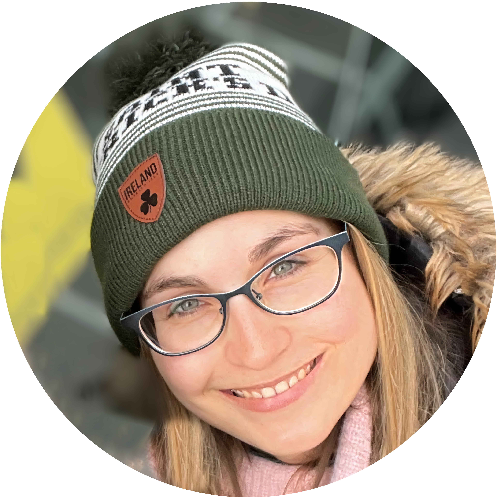
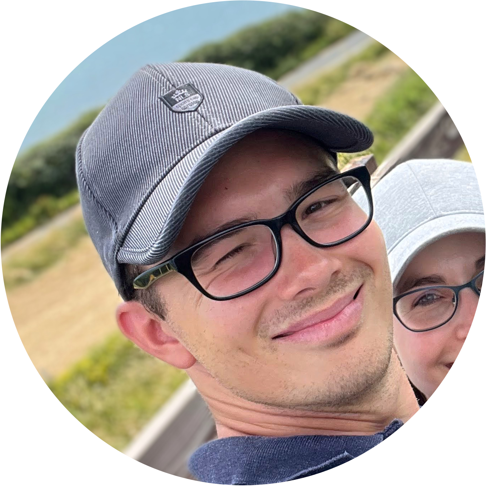
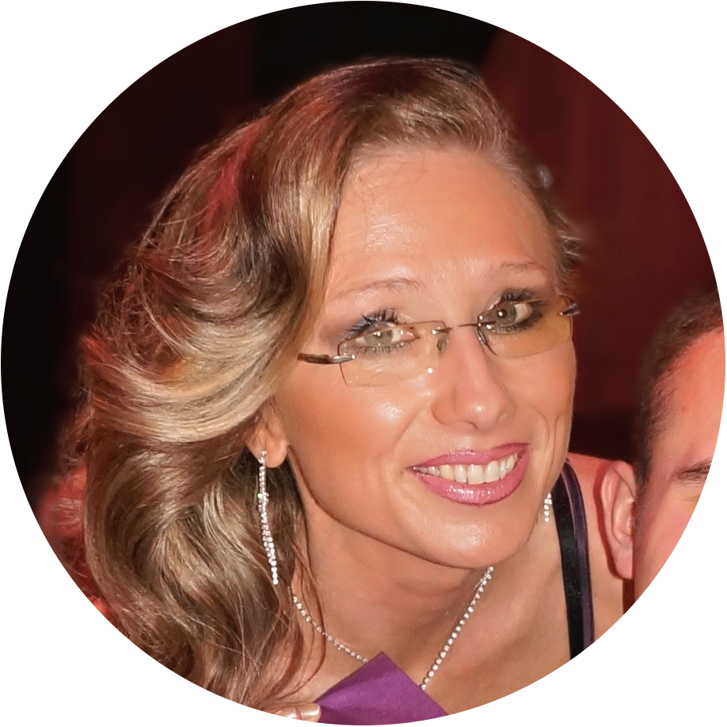

Petruška
2022
NICOLASOVI, s jehož příběhem jsme Vás seznámili v posledním dopise, pomáhá v boji s dětskou mozkovou obrnou terapie Kosmík. Tu mohl absolvovat v prosinci, neboť jsme jeho mamince díky Vaší pomoci mohli přispět částkou 24 000 Kč. Niky je díky tomu o další krok blíže k tomu, aby dělal své vlastní krůčky!

Jakoubek
2021
Jedním z dětí, kterému se snažíme pomoci, je Davídek, který se narodil s těžkým postižením horních a dolních končetin. Rodiče ho opustili hned po narození. Po půl roce se ho ujali současní adoptivní rodiče. Jejich péče a láska mu pomohly postavit se na nohy. I přes těžké zdravotní postižení chodí Davídek do běžné základní školy. Dokonce patří mezi nejlepší žáky. Davídkovi Nadační fond Nová naděje pomohl již třikrát.
V roce 2006 první významnou pomůckou a velkou změnou pro sedmiletého chlapce byl speciální elektrický vozík, který mu alespoň částečně nahradil špatně pohyblivé nohy. V roce 2008 byla životnost elektrických baterií napájejících vozík u konce. Týden co týden baterie slábly a po nabití vydržely jen velmi krátkou dobu.
Davídek se tak nemohl vydat dál než pár metrů od svého domu. Znovu jsme se obrátili na naše dobrosrdečné dárce a s jejich pomocí jsme Davídkovi koupili nové elektrické baterie, které mu opět otevřely možnost vydávat se sám za svými kamarády. A protože ty, kterým pomůžeme, neopouštíme, pomohli jsme už desetiletému Davídkovi v roce 2009 po třetí. Ve škole patří mezi dobré žáky, jenomže každý rok učení přibývá a on nedokáže pero v ruce udržet dlouho. Svaly ho neposlouchají a znamená to pro něj velké vypětí. Díky našim stálým dárcům jsme Davídkovi tentokrát pořídili notebook. Přenosný počítač pro něj znamená možnost lepšího zápisu poznámek i jejich úpravu a doplnění - a hlavně asi jedinou cestu k pracovnímu uplatnění.

Andrejka
2020
NICOLASOVI, s jehož příběhem jsme Vás seznámili v posledním dopise, pomáhá v boji s dětskou mozkovou obrnou terapie Kosmík. Tu mohl absolvovat v prosinci, neboť jsme jeho mamince díky Vaší pomoci mohli přispět částkou 24 000 Kč. Niky je díky tomu o další krok blíže k tomu, aby dělal své vlastní krůčky!
NICOLASOVI, s jehož příběhem jsme Vás seznámili v posledním dopise, pomáhá v boji s dětskou mozkovou obrnou terapie Kosmík. Tu mohl absolvovat v prosinci, neboť jsme jeho mamince díky Vaší pomoci mohli přispět částkou 24 000 Kč. Niky je díky tomu o další krok blíže k tomu, aby dělal své vlastní krůčky!
Andrejka
2020
NICOLASOVI, s jehož příběhem jsme Vás seznámili v posledním dopise, pomáhá v boji s dětskou mozkovou obrnou terapie Kosmík. Tu mohl absolvovat v prosinci, neboť jsme jeho mamince díky Vaší pomoci mohli přispět částkou 24 000 Kč. Niky je díky tomu o další krok blíže k tomu, aby dělal své vlastní krůčky!
Jakoubek
2019
NICOLASOVI, s jehož příběhem jsme Vás seznámili v posledním dopise, pomáhá v boji s dětskou mozkovou obrnou terapie Kosmík. Tu mohl absolvovat v prosinci, neboť jsme jeho mamince díky Vaší pomoci mohli přispět částkou 24 000 Kč. Niky je díky tomu o další krok blíže k tomu, aby dělal své vlastní krůčky!